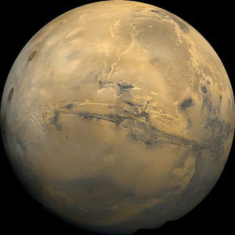

|
O Sistema Solar é constituído por oito planetas principais, são eles: Mercurio, Venus, Terra, Marte, Júpiter, Saturno, Urano e Netuno.
Marte é o quarto planeta a partir do Sol, o segundo menor do Sistema Solar. Batizado em homenagem ao deus romano da guerra, muitas vezes é descrito como o "Planeta Vermelho", porque o óxido de ferro predominante em sua superfície lhe dá uma aparência avermelhada. |
| Marte | |||||||||||
|---|---|---|---|---|---|---|---|---|---|---|---|
|  |
|
Fonte wikipedia